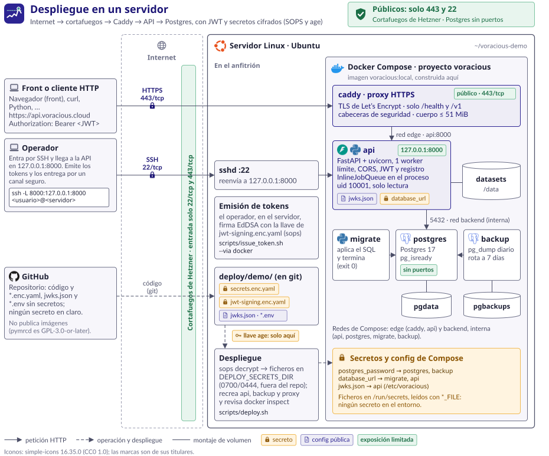
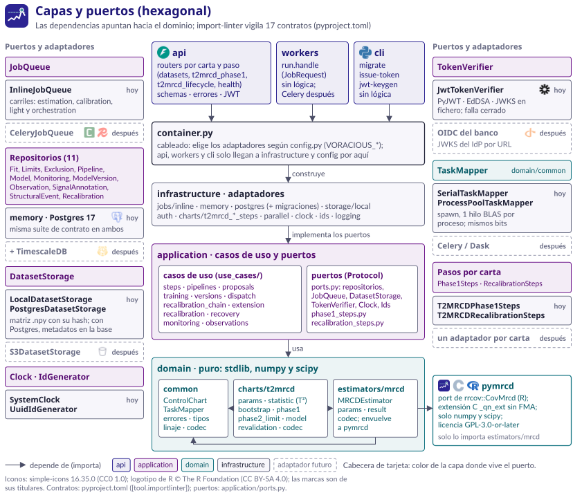

Guía de integración
de la API
Carta de control robusta T²MRCD · Fase I y Fase II
Voracious es un servicio para vigilar el apetito de riesgo multivariado de portafolios financieros. El integrador envía series de indicadores de riesgo (por ejemplo, LCR, NSFR, VaR o concentración) y el servicio devuelve una carta de control que indica cuándo el comportamiento conjunto de esos indicadores se aparta de lo habitual, aunque cada indicador por separado parezca normal.
La carta calcula, para cada observación, un estadístico T²: la distancia de Mahalanobis al
cuadrado respecto a una ubicación y una dispersión estimadas con MRCD (Minimum Regularized
Covariance Determinant; Boudt, Rousseeuw, Vanduffel y Verdonck, 2020). La implementación es un port fiel de
rrcov::CovMrcd de R. Frente a las cartas clásicas (Shewhart, EWMA, Hotelling), MRCD:
Una observación genera una señal cuando su T² supera estrictamente el límite operativo de la versión vigente del modelo.
| Fase | Qué hace | Recursos de la API |
|---|---|---|
| Fase I | Con un histórico de n observaciones y p variables, ajusta MRCD (con el subconjunto de las h = ⌈0,75·n⌉ observaciones más consistentes) y calibra los límites de control por bootstrap no paramétrico (B = 100 réplicas, cuantil 0,995). Produce dos límites: el de Fase I y el de Fase II. El resultado es el modelo con su versión 0. | /v1/datasets, /fits, /limits, /exclusions,
/models, /pipelines/phase1 |
| Fase II | Puntúa observaciones nuevas contra el modelo: T² por observación, límite usado y señal. Cada observación queda registrada con su fecha y su lote. | …/scores, …/observations |
El servicio es dueño del ciclo de vida de la carta; el integrador solo consulta y solicita:
proposed, active, superseded, rejected).effective_from, que debe ser
posterior a la última observación puntuada. Cada observación se evalúa con la versión vigente en su fecha.force_replace) o si hay un evento estructural
sin resolver (por ejemplo, una fusión).El nivel nominal de los límites es 0,5 %. Como el bootstrap remuestrea solo el 75 % central del histórico (para que una contaminación no detectada no infle el límite), la tasa real de falsas alarmas medida frente a observaciones en control es de ≈ 2,3 % con el límite de Fase I y ≈ 2,1 % con el de Fase II (media entre semillas, entre ~1 % y 3,8 %; n = 200, p = 3). Es una característica del diseño, no un error. El caso p > n no está medido.
| Término | Significado |
|---|---|
| Tenant | Organización a la que pertenecen los recursos. Sale del token; un tenant nunca ve los recursos de otro. |
| Integrador | Equipo o sistema que consume la API en nombre de un tenant. |
| Dataset | Matriz n × p subida o derivada (exclusión, candidatas, extensión), con nombres de variables y fechas opcionales y su linaje. |
| Ajuste (fit) | Resultado de MRCD sobre un dataset. |
| Límites (limits) | Límites de Fase I y Fase II calibrados por bootstrap sobre un ajuste. |
| Modelo | Ensamblado de un ajuste y sus límites; agrupa todas las versiones de la carta. |
| Versión | Instantánea inmutable del modelo (base, ajuste y límites) con su estado y su decisión. |
| Observación | Fila puntuada en Fase II, con fecha, valores, T², límite usado y versión. |
| Señal | Observación con T² estrictamente mayor que el límite operativo. |
| Causa asignable | Explicación confirmada por una persona (error de carga, evento puntual); las filas con causa asignable se excluyen de la base. |
| Evento estructural | Cambio del proceso que invalida la base (fusión, cambio de política); obliga a reemplazarla en la siguiente recalibración. |
| Recalibración | Recálculo completo (ajuste y límites) sobre una base nueva; termina en una propuesta de versión. |
El servicio corre en un único servidor con Docker Compose: api (FastAPI sobre uvicorn, un solo
proceso), postgres 17 (sin puertos publicados), migrate (aplica las migraciones y termina) y
backup (volcado diario, siete días). La API solo escucha en 127.0.0.1:8000; el integrador
llega a ella por un túnel SSH. Los secretos viven cifrados (SOPS y age) y se montan como Compose secrets. La cola de
trabajos vive dentro del proceso de la API: un reinicio interrumpe los trabajos en curso, que quedan
failed con el código JOB_INTERRUPTED y deben volver a pedirse.

El código sigue una arquitectura hexagonal. La capa API traduce HTTP, verifica el token y aplica la matriz de roles; la capa de aplicación orquesta los casos de uso (pasos de Fase I, puntuación, ciclo de vida); el dominio contiene la carta T²MRCD y el estimador MRCD, sin dependencias de red ni de base de datos; la infraestructura implementa la persistencia, el almacenamiento de datasets y la cola. La cola reparte los trabajos en carriles por coste (estimación, calibración, ligero y orquestación), de modo que un bootstrap de minutos no retrasa una puntuación de milisegundos.

La API no está expuesta a internet: escucha en 127.0.0.1:8000 del servidor, sin
HTTPS propio. El integrador abre un túnel SSH (cifrado) con la cuenta que le entrega el operador de Voracious y usa la
API como si fuera local:
# Terminal 1: túnel hacia la API del servidor (se mantiene abierto)
ssh -N -L 8000:127.0.0.1:8000 <usuario>@<servidor>
# Terminal 2: variables que usan todos los ejemplos de esta guía
export BASE=http://127.0.0.1:8000
export C=$BASE/v1/charts/t2mrcdSe recomienda que el operador entregue una cuenta solo de túnel: sin consola, sin copia de
ficheros y con el reenvío limitado al puerto de la API. Para ello antepone estas opciones a la llave pública del
integrador en el authorized_keys de esa cuenta y le asigna como shell de inicio
/usr/sbin/nologin, que no permite entrar:
restrict,port-forwarding,permitopen="127.0.0.1:8000" ssh-ed25519 AAAA… integradorCon esa cuenta funciona el túnel de arriba (ssh -N) y se rechaza cualquier otro uso de SSH: una
consola, un comando remoto o un reenvío hacia otro destino.
Toda ruta de negocio exige la cabecera Authorization: Bearer <token>. El token es un JWT
firmado. El operador de Voracious emite el token en el servidor y lo entrega al integrador por un canal
seguro; el integrador no necesita ni debe tener acceso a la llave de firma ni al servidor (la cuenta de túnel
de Acceso de red solo reenvía el puerto de la API).
Para cada persona o sistema que vaya a llamar a la API, el integrador pide al operador un token con estos datos:
| Dato | Descripción | Obligatorio |
|---|---|---|
| Tenant | Organización a la que pertenecerán los recursos (claim tenant). Formato ^[A-Za-z0-9_-]{1,64}$. | Sí |
| Roles | Uno o varios de analyst, approver y admin (ver Roles y matriz de permisos). Conviene pedir el menor rol necesario. | Sí |
Sujeto (sub) | Identidad de quien llama, p. ej. ana.analista o el nombre de un proceso de carga. Formato ^[A-Za-z0-9_.@-]{1,128}$. Queda registrado como autor de anotaciones, eventos estructurales, recalibraciones y decisiones. | Sí |
| Duración | Vida del token en minutos, horas o días. Por defecto 8 horas; como máximo 7 días. | No |
El integrador recibe el token (una cadena de tres partes en base64url separadas por puntos, que
empieza por eyJ) y su fecha de caducidad (claim exp). Un token sirve solo para
el tenant y los roles con que se emitió: para aprobar versiones hace falta otro token con el rol
approver (en los ejemplos, $APPROVER). Para usarlo, se guarda en una variable de entorno sin
escribirlo en disco ni dejarlo en el historial del shell:
# Pegar el token y pulsar Intro (no se muestra en pantalla)
read -rs TOKEN
export TOKENsub queda registrado
como autor de lo que hace.Authorization (uno en
la query se ignora) y una URL acaba en registros e historiales.exp se pide otro al operador; un token caducado
responde 401 con expired. Ante la sospecha de que un token se filtró, se avisa al
operador.El token es un JWS compacto firmado con EdDSA (Ed25519). Esta es la cabecera y los claims de un
token de ejemplo; los valores de iss, aud y kid los fija el operador de cada
entorno (guia es solo un kid de ejemplo):
{
"alg": "EdDSA",
"kid": "guia",
"typ": "JWT"
}{
"iss": "voracious",
"aud": "voracious-api",
"sub": "ana.analista",
"tenant": "banco-a",
"roles": ["analyst"],
"iat": 1792523831,
"nbf": 1792523831,
"exp": 1792552631,
"jti": "62e7e474-0a17-48ed-b829-f7ad9fb74048"
}| Claim | Descripción | Obligatorio |
|---|---|---|
iss | Emisor. Debe coincidir exactamente con el configurado en la API. | Sí |
aud | Audiencia. Debe coincidir exactamente con la configurada. | Sí |
sub | Identidad de quien llama (1 a 256 caracteres imprimibles). Se registra como actor. | Sí |
tenant | Organización (tenant). Todos los recursos que se crean o consultan son de este tenant. | Sí |
roles | Lista no vacía de roles conocidos (analyst, approver, admin). | Sí |
iat | Instante de emisión (segundos Unix). | Sí |
nbf | No válido antes de este instante. | No |
exp | Caducidad. exp − iat no puede superar 7 días. | Sí |
jti | Identificador único del token (aparece en el registro de acceso). | Sí |
La cabecera debe traer un kid presente en el JWKS del servidor y un alg igual al de esa
llave; no se admiten las extensiones crit ni b64. El token se lee únicamente de la cabecera
Authorization: un token en la query se ignora.
| Nivel | Operaciones | analyst | approver | admin |
|---|---|---|---|---|
| Lectura | Todos los GET de negocio: datasets, ajustes, límites, exclusiones,
modelos, estado, puntuaciones, observaciones, eventos, versiones, recalibraciones y tuberías. | Sí | Sí | Sí |
| Operación | Todos los POST salvo la decisión: subir datasets, pedir
ajustes, límites, exclusiones, modelos y tuberías, puntuar, anotar, registrar eventos, recalibrar, extender, cancelar
y proponer una versión. | Sí | No | Sí |
| Decisión | POST …/versions/{n}/approve y …/reject. | No | Sí | Sí |
| Público | /health, /ready, /docs,
/redoc y /openapi.json, sin token. | — | — | — |
admin lo es de su tenant: no existe un
administrador entre tenants.admin puede proponer y
aprobar. Para el principio de cuatro ojos, el operador emite tokens distintos a quien opera (analyst)
y a quien aprueba (approver).decided_by igual al sub de quien registró el evento
(normalmente un analyst) y decision_note = structural_event. Una base
calculada antes del evento ya no es válida, por lo que su descarte no requiere un aprobador.Un token vale 8 horas por defecto y 7 días como máximo: el operador no puede
emitir tokens de vida mayor y la API rechaza cualquier token con exp − iat mayor
(lifetime_too_long). La API admite 30 segundos de margen de reloj en
exp, nbf e iat. No hay revocación individual: un token deja de
valer al caducar o cuando el operador rota la llave de firma. El integrador debe pedir un token nuevo antes de
exp y no reutilizar tokens de larga vida.
Sin token o con un token no válido, la API responde 401 UNAUTHENTICATED antes de leer el
cuerpo, con el motivo en details.reason y la cabecera WWW-Authenticate:
Bearer realm="voracious" si no se presentó token, y
Bearer realm="voracious", error="invalid_token" si se presentó y se rechazó.
details.reason | Causa | Qué hacer |
|---|---|---|
missing_token | No hay cabecera Authorization: Bearer. | Enviar la cabecera. |
malformed | No es un JWT compacto, hay varias cabeceras, tiene espacios o supera 8192 bytes. | Revisar cómo se copia el token. |
unknown_key | El kid falta o no está en el JWKS. | Pedir un token nuevo (la llave se rotó). |
algorithm_not_allowed | alg no permitido o distinto del de la llave. | Usar un token emitido por el servicio. |
bad_signature | La firma no corresponde a la llave. | Pedir un token nuevo. |
expired | exp ya pasó. | Renovar el token. |
not_yet_valid | iat o nbf en el futuro. | Revisar el reloj del equipo. |
wrong_issuer | iss distinto del configurado. | Pedir un token del entorno correcto. |
wrong_audience | aud distinta de la configurada. | Pedir un token del entorno correcto. |
missing_claim | Falta un claim obligatorio. | Pedir un token nuevo. |
invalid_claim | Un claim tiene un tipo o una forma no válidos (p. ej. un rol desconocido). | Pedir un token nuevo. |
lifetime_too_long | exp − iat supera 7 días. | Pedir un token de vida menor. |
curl -s -i "$BASE/v1/datasets/987aac67-a118-408d-b34a-f49b2f56a2f8"HTTP/1.1 401 Unauthorized
www-authenticate: Bearer realm="voracious"
{
"code": "UNAUTHENTICATED",
"message": "falta la cabecera Authorization: Bearer <token>",
"details": {
"reason": "missing_token"
}
}HTTP/1.1 401 Unauthorized
www-authenticate: Bearer realm="voracious", error="invalid_token"
{
"code": "UNAUTHENTICATED",
"message": "el token caducó",
"details": {
"reason": "expired"
}
}La cabecera X-Tenant-ID de versiones anteriores ya no existe: si llega, se ignora.
Una petición que solo la envíe recibe 401 con missing_token. Una ruta inexistente responde
401 sin token y 404 ROUTE_NOT_FOUND con él.
Con un token válido cuyos roles no permiten la operación, la API responde 403 FORBIDDEN con los roles
admitidos en details.required_roles. Ejemplo real: un token con solo approver intenta subir
un dataset.
{
"code": "FORBIDDEN",
"message": "los roles del token no permiten esta operación",
"details": {
"required_roles": ["admin", "analyst"]
}
}En las rutas con cuerpo JSON, el rol se comprueba después de decodificar el JSON y antes de validarlo contra el
esquema: un JSON sintácticamente inválido responde 422 aunque el rol no baste; un JSON válido que no
cumple el esquema responde 403 si el rol no basta. POST /v1/datasets, que admite también CSV
y multipart, comprueba el rol antes de leer el cuerpo: con un rol insuficiente responde 403 sea cual sea
el cuerpo. La autenticación (401) ocurre siempre antes de leer nada.
El tenant de cada petición es el claim tenant del token; el integrador no puede elegir otro. Un recurso de
otro tenant responde exactamente igual que uno inexistente (404), de modo que no se puede averiguar si
existe. Ejemplo real: el token de banco-b consulta un dataset de banco-a.
{
"code": "DATASET_NOT_FOUND",
"message": "el dataset '987aac67-a118-408d-b34a-f49b2f56a2f8' no existe",
"details": {
"dataset_id": "987aac67-a118-408d-b34a-f49b2f56a2f8"
}
}Con el túnel abierto, la URL base es http://127.0.0.1:8000. Las rutas de negocio llevan el prefijo de
versión /v1; las de la carta cuelgan de /v1/charts/t2mrcd (en los ejemplos,
$C). Los datasets no pertenecen a ninguna carta y viven en /v1/datasets. La especificación
OpenAPI está en /openapi.json y la documentación interactiva en /docs y
/redoc.
| Elemento | Convención |
|---|---|
| Cuerpos | JSON en UTF-8 con Content-Type: application/json. Los datasets admiten además
text/csv y multipart/form-data. Los campos desconocidos se rechazan (422). |
| Identificadores | UUID en texto (p. ej. 987aac67-a118-408d-b34a-f49b2f56a2f8). Las
versiones se identifican por su número entero dentro del modelo (0, 1, 2…). |
| Fechas | ISO 8601 con zona horaria obligatoria en las entradas
(2026-08-08T00:00:00Z o …-05:00); se guardan y devuelven en UTC con sufijo
Z. Una fecha sin zona responde 422. En los details de algunos errores las
fechas vienen con +00:00 en lugar de Z (p. ej.
2026-09-12T00:00:00+00:00): ambas formas son ISO 8601 en UTC y el integrador debe aceptar las
dos. |
| Números | Valores finitos: NaN e infinitos se rechazan. |
| Huellas | content_hash y base_hash con forma sha256:<hex>. |
| Partes grandes | Las matrices y vectores por fila solo se devuelven si se piden con
?include= (ver Partes grandes con ?include=). |
{
"code": "INVALID_INPUT",
"message": "la petición no cumple el schema",
"details": {
"errors": [
{
"loc": ["body", "observations", 0, "observed_at"],
"msg": "Input should have timezone info",
"type": "timezone_aware"
}
]
}
}Los pasos de cálculo son trabajos asíncronos. El POST valida la petición de forma
síncrona (los errores de entrada se responden en ese momento) y, si es válida, encola el trabajo y responde
202 con el identificador. El integrador consulta el recurso con GET hasta que su estado sea
final.
{
"id": "b9c6bc0c-79b7-4aec-bf3c-b344326bf495",
"status": "queued"
}| Estado | Significado | ¿Final? |
|---|---|---|
queued | Encolado; aún no ha empezado. | No |
running | En ejecución. Una recalibración paso a paso abierta también está running. | No |
succeeded | Terminó bien; el GET trae el resultado. | Sí |
failed | Terminó con error; el GET trae error con {code, message, details}. | Sí |
cancelled | Solo una recalibración paso a paso cancelada. | Sí |
Un trabajo fallido no es un error HTTP. El GET responde 200 y el error
va en el cuerpo. Ejemplo real: el ajuste MRCD de un dataset con una columna constante.
failed (GET 200){
"id": "dc2a8979-903f-49c6-bc22-80e05b14f2f1",
"status": "failed",
"dataset_id": "c332358b-1a8f-4add-84b2-79183327fbd2",
"params": …,
"created_at": "2026-10-20T19:22:49.136776Z",
"started_at": "2026-10-20T19:22:49.137328Z",
"finished_at": "2026-10-20T19:22:49.144470Z",
"result": null,
"error": {
"code": "MRCD_FIT_FAILED",
"message": "el ajuste MRCD falló",
"details": {
"r_message": "infinite or missing values in 'x'"
}
}
}Los comandos sin cálculo son síncronos: la subida de datasets, las anotaciones, los eventos estructurales, la
apertura de una recalibración paso a paso y su extensión responden 201; la aprobación, el rechazo y la
cancelación, 200.
El servicio no ofrece notificaciones: el integrador sondea. Se recomienda un intervalo según el paso, con un tiempo máximo de espera y retroceso si el trabajo tarda:
| Paso | Duración orientativa | Intervalo |
|---|---|---|
/fits | Milisegundos con 60 × 4; segundos con 200 × 300. | 5 s |
/limits, /pipelines/phase1, recalibración | B = 100 ajustes MRCD: ≈ 2 s con 60 × 4; ≈ 6 min con 200 × 300 en el servidor de 2 vCPU. | 10–15 s |
/exclusions, /models, …/scores, …/versions | Menos de un segundo. | 1 s |
# Espera a que un recurso llegue a un estado final (requiere curl y jq).
# Uso: esperar URL [intervalo en s] [máximo en s]
# Sale con 0 y el estado final; 1 si la respuesta no se arregla esperando
# (401, 403, 404…, o un cuerpo sin status); 2 si se agota el tiempo máximo.
esperar() {
url=$1; intervalo=${2:-5}; limite=$(( $(date +%s) + ${3:-900} ))
cuerpo=$(mktemp)
while [ "$(date +%s)" -lt "$limite" ]; do
codigo=$(curl -s -o "$cuerpo" -w '%{http_code}' "$url" \
-H "Authorization: Bearer $TOKEN")
case "$codigo" in
200)
estado=$(jq -r '.status // "sin_status"' "$cuerpo" 2>/dev/null)
case "$estado" in
succeeded|failed|cancelled)
echo "$estado"; rm -f "$cuerpo"; return 0 ;;
queued|running) ;;
*) echo "respuesta inesperada: ${estado:-no es JSON}" >&2
rm -f "$cuerpo"; return 1 ;;
esac ;;
000|5??) ;; # sin conexión o servidor no disponible: se reintenta
*) echo "HTTP $codigo $(jq -r '.code // empty' "$cuerpo" 2>/dev/null)" >&2
rm -f "$cuerpo"; return 1 ;;
esac
sleep "$intervalo"
done
echo "tiempo máximo agotado" >&2; rm -f "$cuerpo"; return 2
}
esperar "$C/limits/$LIMITS_ID" 10 1200Cada paso es un recurso independiente que recibe los identificadores de los pasos anteriores, no
los datos. El integrador puede detenerse en cualquier paso, revisar su resultado y continuar. La tubería
/pipelines/phase1 encadena los mismos pasos y produce el mismo modelo, bit a bit.
dataset_id ──▶ [ /exclusions ] ──▶ /fits ──▶ /limits ──▶ /models ──▶ model_id
output_dataset_id fit_id limits_id
model_id ──▶ …/scores ──▶ …/observations ──▶ …/annotations
model_id ──▶ …/recalibrations ──▶ /exclusions ──▶ …/extension
──▶ /fits ──▶ /limits ──▶ …/versionsLos pasos validan la coherencia de la cadena antes de encolar: unos límites que no son del ajuste indicado
(LIMITS_FIT_MISMATCH), un paso que no pertenece a la recalibración (RECALIBRATION_MISMATCH) o
un paso aún no terminado (FIT_NOT_READY, LIMITS_NOT_READY) se rechazan de inmediato.
Todo error síncrono usa el mismo cuerpo, con un code estable que el integrador debe usar para
decidir (el message es solo informativo y puede cambiar):
| Campo | Descripción | Tipo |
|---|---|---|
code | Código estable del catálogo (p. ej. VARIABLES_MISMATCH). | String |
message | Texto legible en español. | String |
details | Datos adicionales (motivo, identificadores, errores de schema en details.errors). | Object |
| HTTP | Cuándo |
|---|---|
| 200 | Consulta o comando con resultado; también el GET de un trabajo failed. |
| 201 | Recurso creado de forma síncrona. |
| 202 | Trabajo encolado. |
| 401 | UNAUTHENTICATED: falta el token o no es válido. |
| 403 | FORBIDDEN: el rol no permite la operación. |
| 404 | Recurso inexistente o de otro tenant (*_NOT_FOUND) o ruta inexistente (ROUTE_NOT_FOUND). |
| 405 | METHOD_NOT_ALLOWED. |
| 409 | El recurso existe pero su estado no permite la operación (p. ej. LIMITS_NOT_READY, NOT_A_SIGNAL). |
| 413 | PAYLOAD_TOO_LARGE: el cuerpo de la subida supera el máximo. |
| 415 | UNSUPPORTED_MEDIA_TYPE. |
| 422 | Entrada no válida: INVALID_INPUT (con details.reason o details.errors) y validaciones del ciclo de vida. |
| 500 | INTERNAL_ERROR: fallo inesperado (el detalle queda en el registro del servidor). |
| 503 | /ready no disponible; JOB_INTERRUPTED solo aparece dentro de un trabajo failed. |
?include=Para no transferir matrices en cada consulta, las partes grandes se piden explícitamente. El parámetro se repite
para pedir varias: ?include=covariance&include=historical.
| Recurso | Valores de include |
|---|---|
GET /v1/datasets/{id} | data, rows, observed_at |
GET $C/fits/{id} | covariance (ubicación y dispersión MRCD) |
GET $C/limits/{id} | clean_rows (filas remuestreadas) |
GET $C/exclusions/{id} | row_disposition |
GET $C/models/{id} | training_data, observed_at, covariance, historical (T² y atípicos del histórico) |
GET $C/models/{id}/versions/{n} | base_data, base_refs, covariance, historical |
GET $C/models/{id}/recalibrations/{rid} | row_disposition |
La API no admite todavía una cabecera de idempotencia. Antes de repetir un POST tras un
corte de red, el integrador debe comprobar si el recurso ya se creó. El comportamiento de cada operación ante un
reintento es:
| Operación | Efecto de repetirla |
|---|---|
POST /v1/datasets | Crea otro dataset con otro dataset_id y el mismo content_hash. |
/fits, /limits,/exclusions, /models,/pipelines/phase1 | Crea otro trabajo; con los mismos parámetros y semilla el resultado es idéntico. |
…/scores | Registra las observaciones otra vez (duplicadas). No se debe reintentar sin comprobar. |
…/annotations | Añade otra anotación (son de solo adición; vale la más reciente). |
…/recalibrations | Seguro: con una recalibración en curso responde 409 RECALIBRATION_IN_PROGRESS. |
…/recalibrations/{rid}/extension | Idempotente: devuelve la misma extensión. |
…/approve, …/reject | Seguro: la segunda vez responde 409 VERSION_NOT_PROPOSED. |
Trabajo con JOB_INTERRUPTED | El servicio se reinició durante el trabajo: se vuelve a pedir el mismo paso. |
| Límite | Valor |
|---|---|
Cuerpo de POST /v1/datasets | Lo configura el operador (VORACIOUS_MAX_UPLOAD_MB, en MiB); por defecto 50 MiB (52 428 800 bytes). Por encima, 413 PAYLOAD_TOO_LARGE. |
| Tamaño del token | 8192 bytes. |
Nombre de variable, batch_label | 200 caracteres. |
| Causa de una exclusión | 500 caracteres. |
| Observaciones mínimas de una recalibración | min_observations, 25 por defecto. |
| Recalibraciones en curso por modelo | Una. Propuestas sin resolver por modelo: una. |
Si la cabecera Content-Length declara más bytes que el máximo, la subida se rechaza sin leer el cuerpo y
details trae max_bytes y declared_bytes; si el cuerpo no declara su tamaño (envío
por trozos) y supera el máximo al leerse, details trae solo max_bytes. Ejemplo real: una
subida que declara 53 000 000 bytes con el máximo por defecto de 50 MiB.
{
"code": "PAYLOAD_TOO_LARGE",
"message": "el cuerpo supera el máximo de subida",
"details": {
"max_bytes": 52428800,
"declared_bytes": 53000000
}
}Este capítulo recorre los flujos completos con llamadas reales. Las respuestas proceden de una ejecución de la API
con datos simulados (60 observaciones de cuatro indicadores: lcr, nsfr,
var_99 y concentracion) y se han acortado con «…» donde las listas son largas. Los
identificadores son los de esa ejecución; el integrador obtendrá otros.
Todos los ejemplos suponen el túnel abierto y las variables BASE, C y
TOKEN definidas (ver Acceso de red y
Obtención de un token). El rol necesario se indica en cada paso;
$APPROVER es un token con el rol approver.
Propósito: registrar la matriz histórica n × p de la Fase I. · Rol: operación (analyst o admin). · Respuesta: 201.
| Campo | Descripción | Tipo | Obligatorio |
|---|---|---|---|
data | Matriz por filas, finita, con p columnas en cada fila. | Array[Array[Number]] | Sí |
variables | Nombre de cada columna (p nombres distintos). Pasan al modelo y, si se envían al puntuar, deben coincidir. | Array[String] | No |
observed_at | Fecha de cada fila (n), con zona horaria. Solo trazabilidad: no entra en ninguna estadística. | Array[String] | No |
curl -s -X POST "$BASE/v1/datasets" \
-H "Authorization: Bearer $TOKEN" \
-H "Content-Type: application/json" \
--data-binary @historico.jsonhistorico.json, 60 filas){
"data": [
[1.2542, 1.0934, 0.0134, 0.1819],
[1.4195, 1.1249, 0.0277, 0.1849],
…
],
"variables": ["lcr", "nsfr", "var_99", "concentracion"],
"observed_at": ["2026-06-01T00:00:00Z", "2026-06-02T00:00:00Z", …]
}{
"dataset_id": "987aac67-a118-408d-b34a-f49b2f56a2f8",
"n": 60,
"p": 4,
"content_hash": "sha256:25fd39decac97e2396a30637660b074fefb0fe4f8dffcaf31f782eb4bc664044",
"variables": ["lcr", "nsfr", "var_99", "concentracion"],
"has_observed_at": true
}El CSV lleva cabecera con los nombres de las variables. La columna de fecha se indica con
?date_column= (por defecto observed_at) y no forma parte de la matriz. El mismo histórico en
CSV produce la misma huella:
# historico.csv
observed_at,lcr,nsfr,var_99,concentracion
2026-06-01T00:00:00Z,1.2542,1.0934,0.0134,0.1819
2026-06-02T00:00:00Z,1.4195,1.1249,0.0277,0.1849
…
curl -s -X POST "$BASE/v1/datasets?date_column=observed_at" \
-H "Authorization: Bearer $TOKEN" \
-H "Content-Type: text/csv" \
--data-binary @historico.csv
# o como fichero en multipart/form-data (parte «file»)
curl -s -X POST "$BASE/v1/datasets" \
-H "Authorization: Bearer $TOKEN" \
-F "file=@historico.csv;type=text/csv"{
"dataset_id": "1efdac8d-a256-491e-8429-cc6c4bd7e69f",
"n": 60,
"p": 4,
"content_hash": "sha256:25fd39decac97e2396a30637660b074fefb0fe4f8dffcaf31f782eb4bc664044",
"variables": ["lcr", "nsfr", "var_99", "concentracion"],
"has_observed_at": true
}curl -s "$BASE/v1/datasets/987aac67-a118-408d-b34a-f49b2f56a2f8" \
-H "Authorization: Bearer $TOKEN"{
"dataset_id": "987aac67-a118-408d-b34a-f49b2f56a2f8",
"n": 60,
"p": 4,
"content_hash": "sha256:25fd39decac97e2396a30637660b074fefb0fe4f8dffcaf31f782eb4bc664044",
"source": "upload",
"created_at": "2026-10-20T19:18:13.076845Z",
"parent_id": null,
"origin_ref": null,
"lineage": [
{
"dataset_id": "987aac67-a118-408d-b34a-f49b2f56a2f8",
"source": "upload",
"n": 60,
"origin_ref": null
}
],
"variables": ["lcr", "nsfr", "var_99", "concentracion"],
"has_observed_at": true,
"data": null,
"rows": null,
"observed_at": null
}{
"code": "UNSUPPORTED_MEDIA_TYPE",
"message": "tipo de contenido no admitido (application/json, text/csv o multipart/form-data)",
"details": {
"content_type": "text/plain"
}
}{
"code": "INVALID_INPUT",
"message": "'data' debe ser una matriz numérica n x p",
"details": {
"input": "data"
}
}Encadenamiento: el dataset_id se usa en /fits (Fase I paso a paso),
en /exclusions (exclusión humana) o en /pipelines/phase1 (Fase I en una llamada).
La Fase I por pasos es: exclusión humana (opcional) → ajuste MRCD → límites → modelo; para elegir las filas a excluir se puede hacer antes una pasada preliminar (ajuste y límites sobre el dataset subido). Cada paso es un trabajo asíncrono que se consulta por su id. Los ejemplos siguen ese recorrido completo: la pasada preliminar (Ajuste MRCD y Límites de control), la exclusión (Exclusión humana) y, sobre el dataset derivado, el ajuste, los límites y el modelo (Modelo).
Propósito: estimar la ubicación y la dispersión robustas del histórico. · Rol: operación
para el POST, lectura para el GET. · Respuesta: 202 y 200.
| Campo | Descripción | Tipo | Obligatorio |
|---|---|---|---|
dataset_id | Dataset que se ajusta. | String | Sí |
mrcd.alpha | Proporción del subconjunto. Por defecto 0,75 (valor por defecto de la carta). | Number | No |
mrcd.h | Tamaño del subconjunto; por defecto ⌈alpha·n⌉. | Integer | No |
mrcd.maxcsteps | Máximo de C-steps. Por defecto 200. | Integer | No |
mrcd.rho | Regularización fija; por defecto se elige por número de condición. | Number | No |
mrcd.target | identity (por defecto) o equicorrelation. | String | No |
mrcd.maxcond | Número de condición objetivo. Por defecto 50. | Number | No |
Los parámetros que se omiten toman los valores por defecto citados de la carta; se recomienda omitirlos salvo indicación expresa del equipo de riesgos.
curl -s -X POST "$C/fits" \
-H "Authorization: Bearer $TOKEN" \
-H "Content-Type: application/json" \
-d '{"dataset_id": "987aac67-a118-408d-b34a-f49b2f56a2f8"}'{
"id": "b9c6bc0c-79b7-4aec-bf3c-b344326bf495",
"status": "queued"
}curl -s "$C/fits/b9c6bc0c-79b7-4aec-bf3c-b344326bf495" \
-H "Authorization: Bearer $TOKEN"succeeded){
"id": "b9c6bc0c-79b7-4aec-bf3c-b344326bf495",
"status": "succeeded",
"dataset_id": "987aac67-a118-408d-b34a-f49b2f56a2f8",
"params": {
"alpha": 0.75,
"h": null,
"maxcsteps": 200,
"rho": null,
"target": "identity",
"maxcond": 50.0
},
"created_at": "2026-10-20T19:18:25.464497Z",
"started_at": "2026-10-20T19:18:25.464785Z",
"finished_at": "2026-10-20T19:18:25.497787Z",
"result": {
"alpha": 0.75,
"h": 45,
"rho": 1e-06,
"cnp2": 1.4864156071332653,
"crit": -32.54765306204027,
"n_obs": 60,
"center": null,
"cov": null
},
"error": null
}Con ?include=covariance, result añade center (vector de p) y
cov (matriz p × p):
{
"result": {
"alpha": 0.75,
"h": 45,
"rho": 1e-06,
"cnp2": 1.4864156071332653,
"crit": -32.54765306204027,
"n_obs": 60,
"center": [1.3640822222222222, 1.1253688888888889, 0.02456888888888889, 0.1840688888888889],
"cov": [
[0.002306804610268342, 0.0006418233175270269, 9.38162133575348e-05, 0.0003202257987610752],
…
]
},
…
}Encadenamiento: el id del ajuste es el fit_id de /limits.
Propósito: calibrar los límites de Fase I y Fase II por bootstrap sobre el ajuste. · Rol: operación / lectura. · Respuesta: 202 y 200.
| Campo | Descripción | Tipo | Obligatorio |
|---|---|---|---|
fit_id | Ajuste en succeeded. | String | Sí |
params.bootstrap.seed | Semilla raíz (entero ≥ 0). Hace el resultado reproducible. | Integer | Sí |
params.bootstrap.n_replicates | Réplicas B. Por defecto 100. | Integer | No |
params.bootstrap.alpha_limit | Nivel del límite de Fase I, en (0, 1). Por defecto 0,005. | Number | No |
params.bootstrap.phase2_alpha_limit | Nivel del límite de Fase II. Por defecto 0,005. | Number | No |
params.mrcd | Si se envía, debe coincidir con los parámetros del ajuste (T2MRCD_FIT_PARAMS_MISMATCH). | Object | No |
curl -s -X POST "$C/limits" \
-H "Authorization: Bearer $TOKEN" \
-H "Content-Type: application/json" \
-d '{"fit_id": "b9c6bc0c-79b7-4aec-bf3c-b344326bf495",
"params": {"bootstrap": {"seed": 20261020}}}'{
"id": "5db1eb14-c959-469a-ad89-c57849da75e5",
"status": "queued"
}running){
"id": "5db1eb14-c959-469a-ad89-c57849da75e5",
"status": "running",
"fit_id": "b9c6bc0c-79b7-4aec-bf3c-b344326bf495",
"params": …,
"seed": 20261020,
"stage_kind": "phase1",
"spawn_key": [0, 0],
"recalibration_id": null,
"created_at": "2026-10-20T19:18:37.310600Z",
"started_at": "2026-10-20T19:18:37.310748Z",
"finished_at": null,
"result": null,
"clean_rows": null,
"error": null
}succeeded){
"id": "5db1eb14-c959-469a-ad89-c57849da75e5",
"status": "succeeded",
"fit_id": "b9c6bc0c-79b7-4aec-bf3c-b344326bf495",
"params": …,
"seed": 20261020,
"stage_kind": "phase1",
"spawn_key": [0, 0],
"recalibration_id": null,
"created_at": "2026-10-20T19:18:37.310600Z",
"started_at": "2026-10-20T19:18:37.310748Z",
"finished_at": "2026-10-20T19:18:39.098648Z",
"result": {
"phase1_limit": 30.058533319476776,
"phase2_limit": 37.448253226927584,
"n_replicates": 100,
"seed": 20261020,
"n_clean": 45,
"alpha_limit": 0.005,
"phase2_alpha_limit": 0.005,
"oob_size_min": 10,
"oob_size_mean": 16.49,
"phase1_mc_error": 1.1950041281129338,
"phase2_mc_error": 3.256754098422013,
"estimator_name": "mrcd",
"sampler_name": "bootstrap_oob"
},
"clean_rows": null,
"error": null
}| Campo | Descripción |
|---|---|
phase1_limit | Límite de Fase I: cuantil 1 − alpha_limit del conjunto de T² de todas las réplicas. |
phase2_limit | Límite de Fase II: el mismo cuantil sobre los T² de las filas fuera de cada réplica (OOB). |
n_clean | Filas limpias remuestreadas (subconjunto MRCD, h). |
oob_size_min, oob_size_mean | Filas OOB por réplica (mínimo y media). |
phase1_mc_error, phase2_mc_error | Error Monte Carlo de cada límite (null con B = 1). |
params{
"code": "INVALID_INPUT",
"message": "faltan los parámetros de la carta",
"details": {
"field": "params",
"reason": "params_required"
}
}Encadenamiento: el id de los límites es el limits_id de
/models, junto con el fit_id sobre el que se calibraron.
Propósito: quitar del histórico las filas con una causa asignable confirmada por una persona. · Rol: operación / lectura. · Respuesta: 202 y 200.
El servicio no depura automáticamente: el único filtro de filas es la decisión humana. Para
identificar filas candidatas, el analista puede ensamblar un modelo preliminar con el ajuste y los límites anteriores y
revisar los T² del histórico con GET $C/models/{id}?include=historical. La exclusión se pide
siempre sobre el dataset subido y produce un dataset derivado sobre el que se repiten el ajuste y los
límites; si las causas se conocen de antemano, se pide antes del primer ajuste.
| Campo | Descripción | Tipo | Obligatorio |
|---|---|---|---|
dataset_id | Dataset subido (no uno derivado). | String | Sí |
assignable_cause[].row | Índice de la fila, empezando en 0. | Integer | Sí |
assignable_cause[].cause | Causa confirmada (hasta 500 caracteres). | String | No |
curl -s -X POST "$C/exclusions" \
-H "Authorization: Bearer $TOKEN" \
-H "Content-Type: application/json" \
-d '{"dataset_id": "987aac67-a118-408d-b34a-f49b2f56a2f8",
"assignable_cause": [{"row": 43,
"cause": "carga duplicada del cierre del 2026-07-14"}]}'succeeded){
"id": "64b7c927-cbe7-4ce7-8df5-0e08fbb7c473",
"status": "succeeded",
"dataset_id": "987aac67-a118-408d-b34a-f49b2f56a2f8",
"assignable_cause": [
{
"row": 43,
"cause": "carga duplicada del cierre del 2026-07-14",
"annotation_id": null
}
],
"created_at": "2026-10-20T19:19:12.473594Z",
"started_at": "2026-10-20T19:19:12.473705Z",
"finished_at": "2026-10-20T19:19:12.473879Z",
"insufficient": false,
"output_dataset_id": "4733680b-dab5-429f-830b-ddbd4efde80e",
"n_kept": 59,
"n_excluded_assignable_cause": 1,
"row_disposition": null,
"error": null
}El dataset derivado conserva el linaje y las fechas de las filas que quedan:
{
"dataset_id": "4733680b-dab5-429f-830b-ddbd4efde80e",
"n": 59,
"p": 4,
"content_hash": "sha256:f480f358cb346ab5bc49a477d1efa85693305d44ac8c6f8b7510991ba01c22b8",
"source": "exclusion_output",
"created_at": "2026-10-20T19:19:12.473844Z",
"parent_id": "987aac67-a118-408d-b34a-f49b2f56a2f8",
"origin_ref": "64b7c927-cbe7-4ce7-8df5-0e08fbb7c473",
"lineage": [
{
"dataset_id": "987aac67-a118-408d-b34a-f49b2f56a2f8",
"source": "upload",
"n": 60,
"origin_ref": null
},
{
"dataset_id": "4733680b-dab5-429f-830b-ddbd4efde80e",
"source": "exclusion_output",
"n": 59,
"origin_ref": "64b7c927-cbe7-4ce7-8df5-0e08fbb7c473"
}
],
…
}{
"code": "INVALID_INPUT",
"message": "la exclusión humana solo se admite al principio, sobre el dataset subido",
"details": {
"dataset_id": "4733680b-dab5-429f-830b-ddbd4efde80e",
"reason": "human_exclusion_only_at_start"
}
}Encadenamiento: se repiten el ajuste y los límites sobre output_dataset_id (en el
ejemplo, ajuste e3f897cf-… y límites c773e411-…) y se ensambla el modelo con ellos.
Propósito: ensamblar el modelo de Fase I (versión 0) a partir de un ajuste y sus límites, sin cálculo nuevo. · Rol: operación / lectura. · Respuesta: 202 y 200.
| Campo | Descripción | Tipo | Obligatorio |
|---|---|---|---|
fit_id | Ajuste del dataset subido o de su exclusión. | String | Sí |
limits_id | Límites calibrados sobre ese ajuste. | String | Sí |
lifecycle_policy | Política de revalidación: revalidate_every_months (meses hasta el aviso; por defecto 6) y revalidate_every_observations (observaciones hasta el aviso; por defecto sin límite). Un campo en null desactiva ese criterio. | Object | No |
curl -s -X POST "$C/models" \
-H "Authorization: Bearer $TOKEN" \
-H "Content-Type: application/json" \
-d '{"fit_id": "e3f897cf-8b76-4e5b-8c59-764dd781ba14",
"limits_id": "c773e411-1c13-4fc4-b59c-a681ad906778"}'{
"id": "19439d6d-c490-4a9b-857a-919673f3d5da",
"status": "queued"
}succeeded){
"id": "19439d6d-c490-4a9b-857a-919673f3d5da",
"status": "succeeded",
"created_at": "2026-10-20T19:19:26.720398Z",
"started_at": "2026-10-20T19:19:26.720595Z",
"finished_at": "2026-10-20T19:19:26.720950Z",
"params": …,
"lifecycle_policy": {
"revalidate_every_months": 6,
"revalidate_every_observations": null
},
"n_rows": 60,
"n_features": 4,
"variables": ["lcr", "nsfr", "var_99", "concentracion"],
"has_observed_at": true,
"provenance": {
"root_dataset_id": "987aac67-a118-408d-b34a-f49b2f56a2f8",
"fit_id": "e3f897cf-8b76-4e5b-8c59-764dd781ba14",
"limits_id": "c773e411-1c13-4fc4-b59c-a681ad906778",
"exclusion_id": "64b7c927-cbe7-4ce7-8df5-0e08fbb7c473"
},
"result": {
"n_features": 4,
"n_base": 59,
"limit_regime": "phase1_provisional",
"operative_limit": 34.44350155561304,
"limits": {
"phase1_limit": 34.44350155561304,
"phase2_limit": 40.07411341809791,
"n_replicates": 100,
"seed": 20261020,
"n_clean": 45,
"alpha_limit": 0.005,
"phase2_alpha_limit": 0.005,
"oob_size_min": 10,
"oob_size_mean": 16.49,
"phase1_mc_error": 2.634607934188237,
"phase2_mc_error": 3.6801295963802465,
"estimator_name": "mrcd",
"sampler_name": "bootstrap_oob"
},
"mrcd": {
"alpha": 0.75,
"h": 45,
"rho": 1e-06,
"cnp2": 1.4613895998943889,
"crit": -32.6179610708025,
"n_obs": 59,
"center": null,
"cov": null
},
"pymrcd_version": "0.1.0",
"seed": 20261020,
"statistic_reference": "Pineda Jaramillo, K. S. (2026). Carta de control robusta para observaciones individuales en fase I para procesos de alta dimensionalidad. Tesis de maestría, Universidad Nacional de Colombia. https://repositorio.unal.edu.co/handle/unal/90389",
"historical_t2": null,
"historical_outlier": null
},
"error": null,
"training_data": null,
"observed_at": null
}n_rows es el tamaño del dataset raíz y result.n_base el de la base tras la exclusión.
operative_limit es el límite con el que se vigilará: en la versión 0, el de Fase I
(limit_regime = phase1_provisional).
{
"code": "LIMITS_NOT_READY",
"message": "los límites 'c773e411-1c13-4fc4-b59c-a681ad906778' no están listos",
"details": {
"limits_id": "c773e411-1c13-4fc4-b59c-a681ad906778",
"status": "running"
}
}{
"code": "LIMITS_FIT_MISMATCH",
"message": "los límites 'c773e411-1c13-4fc4-b59c-a681ad906778' no se calibraron sobre el ajuste 'b9c6bc0c-79b7-4aec-bf3c-b344326bf495'",
"details": {
"limits_id": "c773e411-1c13-4fc4-b59c-a681ad906778",
"fit_id": "b9c6bc0c-79b7-4aec-bf3c-b344326bf495",
"limits_fit_id": "e3f897cf-8b76-4e5b-8c59-764dd781ba14"
}
}Encadenamiento: el id del modelo es el {id} de todas las rutas de Fase II
y del ciclo de vida ($C/models/{id}/…).
Propósito: ejecutar la Fase I completa (exclusión, ajuste, límites y modelo) con una sola petición. · Rol: operación / lectura. · Respuesta: 202 y 200.
| Campo | Descripción | Tipo | Obligatorio |
|---|---|---|---|
dataset_id | Dataset subido. | String | Sí |
params | Parámetros de la carta, como en /limits (bootstrap.seed obligatoria; mrcd opcional). | Object | Sí |
assignable_cause | Filas del dataset con causa asignable, como en /exclusions. | Array | No |
lifecycle_policy | Política de revalidación, como en /models. | Object | No |
curl -s -X POST "$C/pipelines/phase1" \
-H "Authorization: Bearer $TOKEN" \
-H "Content-Type: application/json" \
-d '{"dataset_id": "987aac67-a118-408d-b34a-f49b2f56a2f8",
"params": {"bootstrap": {"seed": 20261020}},
"assignable_cause": [{"row": 43,
"cause": "carga duplicada del cierre del 2026-07-14"}]}'{
"id": "d6216135-8001-4d53-b7f6-dec1cc291910",
"status": "queued"
}{
"id": "d6216135-8001-4d53-b7f6-dec1cc291910",
"kind": "phase1",
"recalibration_id": null,
"status": "running",
"dataset_id": "987aac67-a118-408d-b34a-f49b2f56a2f8",
"params": …,
"steps": [
{
"kind": "exclusion",
"id": "25ff9f99-ab1e-46d5-9a6e-2192d8774580"
},
{
"kind": "fit",
"id": "a3bb69a0-664f-441f-9598-2f14e55a5eb0"
},
{
"kind": "limits",
"id": "808eb5eb-6abd-4df7-bf1b-c96bfcbdd8f7"
}
],
"created_at": "2026-10-20T19:19:36.839670Z",
"started_at": "2026-10-20T19:19:36.839890Z",
"finished_at": null,
"model_id": null,
"error": null
}succeeded){
"id": "d6216135-8001-4d53-b7f6-dec1cc291910",
"kind": "phase1",
"recalibration_id": null,
"status": "succeeded",
"dataset_id": "987aac67-a118-408d-b34a-f49b2f56a2f8",
"params": …,
"steps": [
{
"kind": "exclusion",
"id": "25ff9f99-ab1e-46d5-9a6e-2192d8774580"
},
{
"kind": "fit",
"id": "a3bb69a0-664f-441f-9598-2f14e55a5eb0"
},
{
"kind": "limits",
"id": "808eb5eb-6abd-4df7-bf1b-c96bfcbdd8f7"
},
{
"kind": "model",
"id": "3f8f1077-4a9f-40c3-8ac0-8fdeca52d683"
}
],
"created_at": "2026-10-20T19:19:36.839670Z",
"started_at": "2026-10-20T19:19:36.839890Z",
"finished_at": "2026-10-20T19:19:38.666925Z",
"model_id": "3f8f1077-4a9f-40c3-8ac0-8fdeca52d683",
"error": null
}El modelo 3f8f1077-… de la tubería tiene exactamente los mismos límites que el modelo
19439d6d-… construido paso a paso (phase1_limit = 34.44350155561304 en ambos): la tubería
solo encadena los pasos.
{
"code": "INVALID_INPUT",
"message": "la petición no cumple el schema",
"details": {
"errors": [
{
"loc": ["body", "params", "bootstrap", "seed"],
"msg": "Field required",
"type": "missing"
}
]
}
}Encadenamiento: model_id es el modelo para la Fase II. Cada paso de
steps se puede consultar en su propia ruta.
Propósito: calcular el T² y la señal de un lote de observaciones nuevas y registrarlas. · Rol: operación / lectura. · Respuesta: 202 y 200.
| Campo | Descripción | Tipo | Obligatorio |
|---|---|---|---|
observations[].observed_at | Fecha de la observación, con zona horaria. Determina la versión con la que se puntúa. | String | Sí |
observations[].values | Valores de las p variables, en el orden del modelo. | Array[Number] | Sí |
batch_label | Etiqueta del lote (hasta 200 caracteres). | String | No |
variables | Nombres de las columnas. Si el modelo tiene nombres, deben ser los mismos y en el mismo orden. | Array[String] | No |
MODEL_ID=19439d6d-c490-4a9b-857a-919673f3d5da
curl -s -X POST "$C/models/$MODEL_ID/scores" \
-H "Authorization: Bearer $TOKEN" \
-H "Content-Type: application/json" \
--data-binary @lote-agosto.json{
"batch_label": "agosto-2026",
"variables": ["lcr", "nsfr", "var_99", "concentracion"],
"observations": [
{
"observed_at": "2026-08-01T00:00:00Z",
"values": [1.2738, 1.1079, 0.0237, 0.1563]
},
{
"observed_at": "2026-08-02T00:00:00Z",
"values": [1.3302, 1.1237, 0.0247, 0.2175]
},
…
]
}{
"id": "6ee637fc-793e-4315-aa36-41cd4729ea51",
"status": "queued"
}succeeded){
"id": "6ee637fc-793e-4315-aa36-41cd4729ea51",
"model_id": "19439d6d-c490-4a9b-857a-919673f3d5da",
"status": "succeeded",
"batch_label": "agosto-2026",
"n_observations": 25,
"created_at": "2026-10-20T19:19:50.225319Z",
"started_at": "2026-10-20T19:19:50.225476Z",
"finished_at": "2026-10-20T19:19:50.226618Z",
"result": {
"observation_ids": [
"f421ec67-c534-4700-9672-8beab3d6e683",
"4801781d-44e9-4f9c-b2ec-bc19ca6d640a",
"c50eafec-cbac-4371-b6ac-21ea0e1a4243",
…
],
"version_numbers": [0, 0, 0, …],
"n_signals": 2
},
"error": null
}version_numbers indica, por observación, la versión con la que se puntuó (la vigente en su
observed_at).
Las observaciones siguientes se envían en otro lote. En el ejemplo, un segundo lote de 15 observaciones (del 26/08/2026 al 09/09/2026) con una señal; los dos lotes suman las 40 observaciones y las tres señales que se usan en el resto del capítulo:
curl -s -X POST "$C/models/$MODEL_ID/scores" \
-H "Authorization: Bearer $TOKEN" \
-H "Content-Type: application/json" \
--data-binary @lote-septiembre.json{
"batch_label": "septiembre-2026",
"variables": ["lcr", "nsfr", "var_99", "concentracion"],
"observations": [
{
"observed_at": "2026-08-26T00:00:00Z",
"values": [1.2822, 1.1101, 0.023, 0.1856]
},
…
{
"observed_at": "2026-09-09T00:00:00Z",
"values": [1.3683, 1.1873, 0.0288, 0.2214]
}
]
}succeeded){
"id": "e1654672-8f1b-4e9f-8e49-b9a6e81b2f89",
"model_id": "19439d6d-c490-4a9b-857a-919673f3d5da",
"status": "succeeded",
"batch_label": "septiembre-2026",
"n_observations": 15,
"created_at": "2026-10-20T19:19:51.449952Z",
"started_at": "2026-10-20T19:19:51.450073Z",
"finished_at": "2026-10-20T19:19:51.451033Z",
"result": {
"observation_ids": [
"6151c40c-4236-47d5-a5db-2678a8b63fda",
"21f0a503-dbc8-4831-8d07-bff94d1cc37e",
"87d7d512-5c4a-4f6d-b175-01ff22038144",
…
],
"version_numbers": [0, 0, 0, …],
"n_signals": 1
},
"error": null
}{
"code": "VARIABLES_MISMATCH",
"message": "las variables no son las del modelo (mismos nombres y en el mismo orden)",
"details": {
"input": "scores",
"expected": ["lcr", "nsfr", "var_99", "concentracion"],
"received": ["nsfr", "lcr", "var_99", "concentracion"]
}
}{
"code": "MODEL_NOT_FOUND",
"message": "el modelo '00000000-0000-0000-0000-000000000000' no existe",
"details": {
"model_id": "00000000-0000-0000-0000-000000000000"
}
}Encadenamiento: los observation_ids se consultan en …/observations; las
señales se anotan en …/observations/{oid}/annotations.
Propósito: leer las observaciones registradas por rango de fechas y, opcionalmente, solo las señales. · Rol: lectura. · Respuesta: 200.
| Parámetro | Descripción | Tipo | Obligatorio |
|---|---|---|---|
from | Inicio del rango de observed_at (inclusivo), con zona horaria. | String | No |
to | Fin del rango (inclusivo). | String | No |
signals_only | true para devolver solo las señales. | Boolean | No |
curl -s "$C/models/$MODEL_ID/observations?signals_only=true" \
-H "Authorization: Bearer $TOKEN"[
{
"id": "aa05a567-e18e-4134-8479-56a93d4553d6",
"score_id": "6ee637fc-793e-4315-aa36-41cd4729ea51",
"batch_label": "agosto-2026",
"observed_at": "2026-08-08T00:00:00Z",
"values": [1.0271, 0.9221, 0.0423, 0.2707],
"t2": 204.51134697016283,
"limit": 34.44350155561304,
"limit_kind": "phase1_provisional",
"version_number": 0,
"signal": true,
"recorded_at": "2026-10-20T19:19:50.226171Z",
"annotation": null
},
…
]| Campo | Descripción |
|---|---|
t2 | Estadístico T² de la observación. |
limit, limit_kind | Límite usado y su régimen (phase1_provisional en la versión 0; phase2 en las recalibradas). |
version_number | Versión con la que se puntuó. |
signal | t2 > limit (estricto). |
annotation | Anotación vigente (la más reciente) o null. |
Propósito: dejar constancia de la investigación de una señal. Las señales con causa asignable se excluyen de la base en la siguiente recalibración. · Rol: operación. · Respuesta: 201.
| Campo | Descripción | Tipo | Obligatorio |
|---|---|---|---|
assignable_cause | true si una persona confirmó una causa asignable. | Boolean | Sí |
cause | Cuál fue la causa. | String | No |
action | Acción tomada. | String | No |
El autor (actor) es el sub del token; no se envía en el cuerpo. Las anotaciones son de
solo adición: una anotación nueva no borra la anterior, pero vale la más reciente.
OBS_ID=aa05a567-e18e-4134-8479-56a93d4553d6
curl -s -X POST "$C/models/$MODEL_ID/observations/$OBS_ID/annotations" \
-H "Authorization: Bearer $TOKEN" \
-H "Content-Type: application/json" \
-d '{"assignable_cause": true,
"cause": "error en la carga del LCR del 2026-08-08",
"action": "se corrigió la fuente y se reprocesó el cierre"}'{
"id": "7d6d310e-aa9d-48de-9e77-b3169e698ac8",
"observation_id": "aa05a567-e18e-4134-8479-56a93d4553d6",
"assignable_cause": true,
"cause": "error en la carga del LCR del 2026-08-08",
"action": "se corrigió la fuente y se reprocesó el cierre",
"actor": "ana.analista",
"created_at": "2026-10-20T19:20:09.583332Z"
}{
"code": "NOT_A_SIGNAL",
"message": "solo se anotan observaciones con señal",
"details": {
"observation_id": "f421ec67-c534-4700-9672-8beab3d6e683"
}
}actor{
"code": "INVALID_INPUT",
"message": "la petición no cumple el schema",
"details": {
"errors": [
{
"loc": ["body", "actor"],
"msg": "Extra inputs are not permitted",
"type": "extra_forbidden"
}
]
}
}Propósito: conocer la situación del modelo y sus avisos. · Rol: lectura. · Respuesta: 200.
curl -s "$C/models/$MODEL_ID/status" \
-H "Authorization: Bearer $TOKEN"{
"status": "startup",
"active_version": 0,
"proposed_version": null,
"unresolved_event_id": null,
"revalidation_due": false,
"revalidation_due_at": "2027-04-20T19:19:26.720950Z",
"observations_since_active": 40,
"notices": []
}| Valor | Significado |
|---|---|
requires_new_base | Hay un evento estructural sin una base nueva posterior. Se sigue vigilando con la versión vigente. |
proposal_pending | Hay una versión propuesta sin aprobar ni rechazar. |
revalidation_due | Venció la revalidación periódica (meses u observaciones). |
startup | Se vigila con la versión 0 (límite de Fase I). |
active | Se vigila con una versión recalibrada (límite de Fase II). |
Propósito: declarar un cambio del proceso que invalida la base (fusión, cambio de política o de metodología). · Rol: operación / lectura. · Respuesta: 201 y 200.
| Campo | Descripción | Tipo | Obligatorio |
|---|---|---|---|
occurred_at | Cuándo ocurrió, con zona horaria. | String | Sí |
description | Descripción del evento. | String | Sí |
El ejemplo usa otro modelo del mismo tenant (3f8f1077-…, el de la tubería), con 70 observaciones
puntuadas entre agosto y octubre.
MODEL_ID=3f8f1077-4a9f-40c3-8ac0-8fdeca52d683
curl -s -X POST "$C/models/$MODEL_ID/structural-events" \
-H "Authorization: Bearer $TOKEN" \
-H "Content-Type: application/json" \
-d '{"occurred_at": "2026-09-12T00:00:00Z",
"description":
"Fusión con la entidad B: cambia la composición del balance"}'{
"id": "33159a46-a875-4c44-9462-8ace1835c221",
"occurred_at": "2026-09-12T00:00:00Z",
"description": "Fusión con la entidad B: cambia la composición del balance",
"actor": "ana.analista",
"registered_at": "2026-10-20T19:21:47.228388Z"
}{
"status": "requires_new_base",
"active_version": 0,
"proposed_version": null,
"unresolved_event_id": "33159a46-a875-4c44-9462-8ace1835c221",
"revalidation_due": false,
"revalidation_due_at": "2027-04-20T19:19:38.666419Z",
"observations_since_active": 70,
"notices": ["requires_new_base"]
}Consecuencias para el integrador:
rejected con decided_by igual al sub de quien registró el evento (en el
ejemplo sería ana.analista, con rol analyst), decision_note =
structural_event y rejected_at igual al instante del registro. Una base anterior al
evento ya no es válida, así que no hace falta un aprobador para descartarla. Si la propuesta se estaba calculando
cuando se registró el evento, la versión nace ya rechazada con la misma nota. En este ejemplo no había ninguna
propuesta pendiente.force_replace, y su rango no puede incluir fechas anteriores al evento.{
"code": "RANGE_BEFORE_STRUCTURAL_EVENT",
"message": "el rango incluye datos anteriores al último evento estructural",
"details": {
"event_id": "33159a46-a875-4c44-9462-8ace1835c221",
"occurred_at": "2026-09-12T00:00:00+00:00",
"range_from": "2026-08-01T00:00:00+00:00"
}
}Una recalibración recalcula todo (ajuste MRCD y límites) sobre una base nueva y termina en una
versión propuesta. Se hace por pasos (mode: "stepwise") o en una llamada
(mode: "pipeline", por defecto). Las cadenas de pasos son:
| Decisión | Cadena |
|---|---|
| EXTEND (por defecto) | abrir → [exclusión desde anotaciones] → /extension → /fits → /limits → …/versions |
| REPLACE (forzado o por evento) | abrir → [exclusión desde anotaciones] → /fits → /limits → …/versions |
Propósito: fijar el rango de observaciones nuevas y congelar las candidatas. · Rol:
operación / lectura. · Respuesta: 201 (stepwise) o 202 (pipeline).
| Campo | Descripción | Tipo | Obligatorio |
|---|---|---|---|
range_from, range_to | Rango de observed_at de las observaciones nuevas (inclusivo). | String | Sí |
params.seed | Semilla de la recalibración (entero ≥ 0). | Integer | Sí |
params.min_observations | Mínimo de observaciones nuevas conservadas. Por defecto 25. | Integer | No |
force_replace | true para reemplazar la base por las observaciones nuevas. Por defecto false (se amplía). | Boolean | No |
mode | pipeline (por defecto) o stepwise. | String | No |
El resto de parámetros (B, niveles, MRCD) se heredan de la versión vigente
(inherited_params); no se envían.
MODEL_ID=19439d6d-c490-4a9b-857a-919673f3d5da
curl -s -X POST "$C/models/$MODEL_ID/recalibrations" \
-H "Authorization: Bearer $TOKEN" \
-H "Content-Type: application/json" \
-d '{"range_from": "2026-08-01T00:00:00Z", "range_to": "2026-09-30T23:59:59Z",
"params": {"seed": 20261020}, "mode": "stepwise"}'{
"recalibration_id": "c659c437-0c1a-49a9-bf2f-a18bd9325bb6",
"candidates_dataset_id": "2693bb4f-b11d-428d-88e1-23463f3c4a45",
"status": "running"
}{
"id": "c659c437-0c1a-49a9-bf2f-a18bd9325bb6",
"model_id": "19439d6d-c490-4a9b-857a-919673f3d5da",
"mode": "stepwise",
"status": "running",
"range_from": "2026-08-01T00:00:00Z",
"range_to": "2026-09-30T23:59:59Z",
"params": {
"seed": 20261020,
"min_observations": 25
},
"force_replace": false,
"base_version_number": 0,
"structural_event_id": null,
"actor": "ana.analista",
"created_at": "2026-10-20T19:20:35.318505Z",
"started_at": "2026-10-20T19:20:35.318505Z",
"finished_at": null,
"outcome": null,
"proposed_version": null,
"candidates_dataset_id": "2693bb4f-b11d-428d-88e1-23463f3c4a45",
"n_candidates": 40,
"n_already_in_base": 0,
"inherited_params": …,
"pipeline_id": null,
"proposal": null,
"kept_dataset_id": null,
"extension_dataset_id": null,
"report": null,
"error": null
}{
"code": "RECALIBRATION_IN_PROGRESS",
"message": "ya hay una recalibración en curso",
"details": {
"recalibration_id": "c659c437-0c1a-49a9-bf2f-a18bd9325bb6"
}
}{
"code": "RECALIBRATION_INSUFFICIENT_OBSERVATIONS",
"message": "no hay suficientes observaciones candidatas en el rango",
"details": {
"available": 16,
"required": 25
}
}Las observaciones del rango que no están ya en la base forman el dataset de candidatas
(candidates_dataset_id), congelado al abrir la sesión:
curl -s "$BASE/v1/datasets/2693bb4f-b11d-428d-88e1-23463f3c4a45" \
-H "Authorization: Bearer $TOKEN"{
"dataset_id": "2693bb4f-b11d-428d-88e1-23463f3c4a45",
"n": 40,
"p": 4,
"content_hash": "sha256:c13eab9886dac8ee791d9f28e74eb11ad8a6178eae12cdc95f74b7144eae18f6",
"source": "recalibration_candidates",
"created_at": "2026-10-20T19:20:35.318505Z",
"parent_id": null,
"origin_ref": "c659c437-0c1a-49a9-bf2f-a18bd9325bb6",
"lineage": [
{
"dataset_id": "2693bb4f-b11d-428d-88e1-23463f3c4a45",
"source": "recalibration_candidates",
"n": 40,
"origin_ref": "c659c437-0c1a-49a9-bf2f-a18bd9325bb6"
}
],
"variables": ["lcr", "nsfr", "var_99", "concentracion"],
"has_observed_at": true,
…
}Si alguna candidata tiene una anotación vigente con assignable_cause: true, la exclusión es
obligatoria antes de seguir. Se pide con {dataset_id} solo: las filas salen de las anotaciones. Las señales
sin anotación o anotadas sin causa asignable se conservan.
curl -s -X POST "$C/exclusions" \
-H "Authorization: Bearer $TOKEN" \
-H "Content-Type: application/json" \
-d '{"dataset_id": "2693bb4f-b11d-428d-88e1-23463f3c4a45"}'succeeded){
"id": "7c5f6e07-dca2-4360-a029-7e3009b493f3",
"status": "succeeded",
"dataset_id": "2693bb4f-b11d-428d-88e1-23463f3c4a45",
"assignable_cause": [
{
"row": 7,
"cause": "error en la carga del LCR del 2026-08-08",
"annotation_id": "7d6d310e-aa9d-48de-9e77-b3169e698ac8"
}
],
"created_at": "2026-10-20T19:20:46.779058Z",
"started_at": "2026-10-20T19:20:46.779124Z",
"finished_at": "2026-10-20T19:20:46.779306Z",
"insufficient": false,
"output_dataset_id": "e10cfac9-5709-4782-b1f3-35776503be16",
"n_kept": 39,
"n_excluded_assignable_cause": 1,
"row_disposition": null,
"error": null
}{
"code": "INVALID_INPUT",
"message": "hay candidatas con causa asignable: primero la exclusión humana",
"details": {
"dataset_id": "2693bb4f-b11d-428d-88e1-23463f3c4a45",
"reason": "human_exclusion_required"
}
}Propósito: construir el dataset de la base ampliada (base vigente + nuevas conservadas). Solo en EXTEND. · Rol: operación. · Respuesta: 201 (síncrono e idempotente).
| Campo | Descripción | Tipo | Obligatorio |
|---|---|---|---|
dataset_id | Nuevas conservadas: la salida de la exclusión o, si no hubo causas asignables, las candidatas. | String | Sí |
REC_ID=c659c437-0c1a-49a9-bf2f-a18bd9325bb6
curl -s -X POST "$C/models/$MODEL_ID/recalibrations/$REC_ID/extension" \
-H "Authorization: Bearer $TOKEN" \
-H "Content-Type: application/json" \
-d '{"dataset_id": "e10cfac9-5709-4782-b1f3-35776503be16"}'{
"dataset_id": "c4080f38-3643-4e22-b38d-51975f03dbec",
"n_base": 59,
"n_kept_new": 39
}Se ajusta MRCD sobre el dataset de extensión (o, en REPLACE, sobre las nuevas conservadas) y se calibran los límites
indicando la recalibración en lugar de params:
curl -s -X POST "$C/fits" -H "Authorization: Bearer $TOKEN" \
-H "Content-Type: application/json" \
-d '{"dataset_id": "c4080f38-3643-4e22-b38d-51975f03dbec"}'
curl -s -X POST "$C/limits" -H "Authorization: Bearer $TOKEN" \
-H "Content-Type: application/json" \
-d '{"fit_id": "40698613-7612-4636-835e-af52c1229b4f",
"recalibration_id": "c659c437-0c1a-49a9-bf2f-a18bd9325bb6"}'{
"id": "ef2df7a9-6b02-4333-8b58-ef7778905605",
"status": "succeeded",
"fit_id": "40698613-7612-4636-835e-af52c1229b4f",
"params": …,
"seed": 20261020,
"stage_kind": "extension",
"spawn_key": [0, 0],
"recalibration_id": "c659c437-0c1a-49a9-bf2f-a18bd9325bb6",
"created_at": "2026-10-20T19:20:58.074051Z",
"started_at": "2026-10-20T19:20:58.074150Z",
"finished_at": "2026-10-20T19:20:59.954644Z",
"result": {
"phase1_limit": 22.698059003374087,
"phase2_limit": 24.91495850852821,
"n_replicates": 100,
"seed": 20261020,
"n_clean": 74,
"alpha_limit": 0.005,
"phase2_alpha_limit": 0.005,
"oob_size_min": 21,
"oob_size_mean": 27.34,
"phase1_mc_error": 0.9322323441941347,
"phase2_mc_error": 1.0841299989864772,
"estimator_name": "mrcd",
"sampler_name": "bootstrap_oob"
},
"clean_rows": null,
"error": null
}params para un ajuste de una recalibración{
"code": "RECALIBRATION_MISMATCH",
"message": "el ajuste no es de esa recalibración",
"details": {
"fit_id": "40698613-7612-4636-835e-af52c1229b4f",
"dataset_id": "c4080f38-3643-4e22-b38d-51975f03dbec",
"recalibration_id": null,
"dataset_recalibration_id": "c659c437-0c1a-49a9-bf2f-a18bd9325bb6"
}
}Propósito: crear la versión propuesta a partir del ajuste y los límites finales. · Rol:
operación. · Respuesta: 202; el id devuelto es el de la recalibración, que se consulta hasta
succeeded.
| Campo | Descripción | Tipo | Obligatorio |
|---|---|---|---|
recalibration_id | Recalibración en curso. | String | Sí |
fit_id | Ajuste final (de la extensión en EXTEND; de las nuevas en REPLACE). | String | Sí |
limits_id | Límites de ese ajuste. | String | Sí |
curl -s -X POST "$C/models/$MODEL_ID/versions" \
-H "Authorization: Bearer $TOKEN" \
-H "Content-Type: application/json" \
-d '{"recalibration_id": "c659c437-0c1a-49a9-bf2f-a18bd9325bb6",
"fit_id": "40698613-7612-4636-835e-af52c1229b4f",
"limits_id": "ef2df7a9-6b02-4333-8b58-ef7778905605"}'{
"id": "c659c437-0c1a-49a9-bf2f-a18bd9325bb6",
"status": "queued"
}{
"id": "c659c437-0c1a-49a9-bf2f-a18bd9325bb6",
"model_id": "19439d6d-c490-4a9b-857a-919673f3d5da",
"mode": "stepwise",
"status": "succeeded",
"range_from": "2026-08-01T00:00:00Z",
"range_to": "2026-09-30T23:59:59Z",
"params": {
"seed": 20261020,
"min_observations": 25
},
"force_replace": false,
"base_version_number": 0,
"structural_event_id": null,
"actor": "ana.analista",
"created_at": "2026-10-20T19:20:35.318505Z",
"started_at": "2026-10-20T19:20:35.318505Z",
"finished_at": "2026-10-20T19:21:07.025475Z",
"outcome": "extend",
"proposed_version": 1,
"candidates_dataset_id": "2693bb4f-b11d-428d-88e1-23463f3c4a45",
"n_candidates": 40,
"n_already_in_base": 0,
"inherited_params": …,
"pipeline_id": null,
"proposal": {
"fit_id": "40698613-7612-4636-835e-af52c1229b4f",
"limits_id": "ef2df7a9-6b02-4333-8b58-ef7778905605",
"status": "succeeded",
"requested_at": "2026-10-20T19:21:07.021940Z"
},
"kept_dataset_id": "e10cfac9-5709-4782-b1f3-35776503be16",
"extension_dataset_id": "c4080f38-3643-4e22-b38d-51975f03dbec",
"report": {
"decision": "extend",
"n_base": 59,
"n_new": 40,
"n_excluded_assignable_cause": 1,
"n_kept_new": 39,
"min_observations": 25,
"before": {
"phase1_limit": 34.44350155561304,
"phase2_limit": 40.07411341809791,
"phase1_mc_error": 2.634607934188237,
"phase2_mc_error": 3.6801295963802465,
"regime": "phase1_provisional",
"operative_limit": 34.44350155561304,
"n_base": 59
},
"after": {
"phase1_limit": 22.698059003374087,
"phase2_limit": 24.91495850852821,
"phase1_mc_error": 0.9322323441941347,
"phase2_mc_error": 1.0841299989864772,
"regime": "phase2",
"operative_limit": 24.91495850852821,
"n_base": 98
},
"phase2_exceeds_phase1": true,
"row_disposition": null
},
"error": null
}| Campo | Descripción |
|---|---|
decision | extend o replace. |
n_base, n_new | Filas de la base vigente y candidatas nuevas. |
n_excluded_assignable_cause, n_kept_new | Nuevas excluidas por causa asignable y conservadas. |
before, after | Límites y límite operativo antes y después. |
phase2_exceeds_phase1 | Diagnóstico: el límite de Fase II supera al de Fase I. |
La carta pasa a proposal_pending:
{
"status": "proposal_pending",
"active_version": 0,
"proposed_version": 1,
"unresolved_event_id": null,
"revalidation_due": false,
"revalidation_due_at": "2027-04-20T19:19:26.720950Z",
"observations_since_active": 40,
"notices": ["proposal_pending"]
}Con force_replace: true o con un evento estructural sin resolver, la base nueva son solo las
observaciones nuevas conservadas y no hay paso de extensión: tras la exclusión (si hay causas asignables) se ajusta
MRCD con /fits sobre candidates_dataset_id (o sobre la salida de la exclusión), se calibran
los límites con {fit_id, recalibration_id} y se pide la versión con …/versions, igual que en
EXTEND. El ejemplo usa el modelo con el evento estructural:
MODEL_ID=3f8f1077-4a9f-40c3-8ac0-8fdeca52d683
curl -s -X POST "$C/models/$MODEL_ID/recalibrations" \
-H "Authorization: Bearer $TOKEN" \
-H "Content-Type: application/json" \
-d '{"range_from": "2026-09-13T00:00:00Z", "range_to": "2026-10-15T00:00:00Z",
"params": {"seed": 20261021}, "force_replace": true, "mode": "stepwise"}'{
"code": "INVALID_INPUT",
"message": "un reemplazo (evento estructural o petición explícita) no amplía la base",
"details": {
"recalibration_id": "cac23eda-2774-447c-a3db-c921d3e04e5a",
"reason": "forced_replace_has_no_extension"
}
}En la ejecución de la guía, esta primera sesión se canceló y una segunda sesión idéntica completó la cadena
/fits → /limits → …/versions: produjo la versión 2 del modelo
(decision = replace, justification = structural_event), que se
aprobó después. La versión 1 de ese modelo es la propuesta de la tubería, rechazada en
Rechazar.
Una sesión paso a paso no caduca sola: si se abandona, se cancela para liberar el modelo.
cancelled){
"id": "cac23eda-2774-447c-a3db-c921d3e04e5a",
"model_id": "3f8f1077-4a9f-40c3-8ac0-8fdeca52d683",
"mode": "stepwise",
"status": "cancelled",
"range_from": "2026-09-13T00:00:00Z",
"range_to": "2026-10-15T00:00:00Z",
"params": {
"seed": 20261021,
"min_observations": 25
},
"force_replace": true,
"base_version_number": 0,
"structural_event_id": "33159a46-a875-4c44-9462-8ace1835c221",
"actor": "ana.analista",
"created_at": "2026-10-20T19:22:11.005153Z",
"started_at": "2026-10-20T19:22:11.005153Z",
"finished_at": "2026-10-20T19:22:11.171580Z",
"outcome": null,
"proposed_version": null,
"candidates_dataset_id": "44b06356-f026-45b5-bc3c-799a4eb23a22",
"n_candidates": 30,
"n_already_in_base": 0,
"inherited_params": …,
"pipeline_id": null,
"proposal": null,
"kept_dataset_id": null,
"extension_dataset_id": null,
"report": null,
"error": null
}{
"code": "RECALIBRATION_NOT_IN_PROGRESS",
"message": "la recalibración 'cac23eda-2774-447c-a3db-c921d3e04e5a' no se puede cancelar",
"details": {
"recalibration_id": "cac23eda-2774-447c-a3db-c921d3e04e5a",
"mode": "stepwise",
"status": "cancelled",
"proposal_requested": false
}
}Con mode: "pipeline" (o sin mode) el servicio encadena todos los pasos y responde
202; el integrador consulta la recalibración hasta succeeded. Ejemplo real con el evento
estructural sin resolver (la decisión es replace aunque no se pidió):
curl -s -X POST "$C/models/$MODEL_ID/recalibrations" \
-H "Authorization: Bearer $TOKEN" \
-H "Content-Type: application/json" \
-d '{"range_from": "2026-09-13T00:00:00Z", "range_to": "2026-10-15T00:00:00Z",
"params": {"seed": 20261020}, "mode": "pipeline"}'{
"id": "ecbc6fb0-a7b6-4344-8da0-ac1ec6b3c5b9",
"status": "queued"
}succeeded){
"id": "ecbc6fb0-a7b6-4344-8da0-ac1ec6b3c5b9",
"model_id": "3f8f1077-4a9f-40c3-8ac0-8fdeca52d683",
"mode": "pipeline",
"status": "succeeded",
"range_from": "2026-09-13T00:00:00Z",
"range_to": "2026-10-15T00:00:00Z",
"params": {
"seed": 20261020,
"min_observations": 25
},
"force_replace": true,
"base_version_number": 0,
"structural_event_id": "33159a46-a875-4c44-9462-8ace1835c221",
"actor": "ana.analista",
"created_at": "2026-10-20T19:21:57.426559Z",
"started_at": "2026-10-20T19:21:57.426973Z",
"finished_at": "2026-10-20T19:21:58.905058Z",
"outcome": "replace",
"proposed_version": 1,
"candidates_dataset_id": "3598c8d4-af19-40b7-901a-9834a5ab57d5",
"n_candidates": 30,
"n_already_in_base": 0,
"inherited_params": …,
"pipeline_id": "ff558e5b-c596-49a9-9a60-fdc433b4e02e",
"proposal": {
"fit_id": "e53d5d44-557a-4152-befc-74409db5a534",
"limits_id": "4f96745f-930c-4e0f-97ec-151e0509bdfd",
"status": "succeeded",
"requested_at": "2026-10-20T19:21:58.903324Z"
},
"kept_dataset_id": null,
"extension_dataset_id": null,
"report": {
"decision": "replace",
"n_base": 59,
"n_new": 30,
"n_excluded_assignable_cause": 0,
"n_kept_new": 30,
"min_observations": 25,
"before": {
"phase1_limit": 34.44350155561304,
"phase2_limit": 40.07411341809791,
"phase1_mc_error": 2.634607934188237,
"phase2_mc_error": 3.6801295963802465,
"regime": "phase1_provisional",
"operative_limit": 34.44350155561304,
"n_base": 59
},
"after": {
"phase1_limit": 58.33443557452896,
"phase2_limit": 110.38826302921456,
"phase1_mc_error": 3.055769677860356,
"phase2_mc_error": 22.26669668675915,
"regime": "phase2",
"operative_limit": 110.38826302921456,
"n_base": 30
},
"phase2_exceeds_phase1": true,
"row_disposition": null
},
"error": null
}force_replace aparece en true porque el evento estructural fuerza el reemplazo. Los
pasos que creó la tubería se consultan en GET $C/pipelines/{pipeline_id}:
{
"id": "ff558e5b-c596-49a9-9a60-fdc433b4e02e",
"kind": "recalibration",
"recalibration_id": "ecbc6fb0-a7b6-4344-8da0-ac1ec6b3c5b9",
"status": "succeeded",
"dataset_id": "3598c8d4-af19-40b7-901a-9834a5ab57d5",
"params": …,
"steps": [
{
"kind": "fit",
"id": "e53d5d44-557a-4152-befc-74409db5a534"
},
{
"kind": "limits",
"id": "4f96745f-930c-4e0f-97ec-151e0509bdfd"
},
{
"kind": "version",
"id": "ecbc6fb0-a7b6-4344-8da0-ac1ec6b3c5b9"
}
],
"created_at": "2026-10-20T19:21:57.426559Z",
"started_at": "2026-10-20T19:21:57.426894Z",
"finished_at": "2026-10-20T19:21:58.905282Z",
"model_id": "3f8f1077-4a9f-40c3-8ac0-8fdeca52d683",
"error": null
}Propósito: revisar la propuesta antes de decidir. · Rol: lectura. · Respuesta: 200.
MODEL_ID=19439d6d-c490-4a9b-857a-919673f3d5da
curl -s "$C/models/$MODEL_ID/versions" \
-H "Authorization: Bearer $APPROVER"[
{
"number": 0,
"status": "active",
"decision": "initial",
"justification": "initial_fit",
"created_at": "2026-10-20T19:19:26.720950Z",
"effective_from": null,
"approved_at": "2026-10-20T19:19:26.720950Z",
"rejected_at": null,
"decided_by": null,
"decision_note": null,
"recalibration_id": null,
"structural_event_id": null,
"previous_number": null,
"base_hash": "sha256:f480f358cb346ab5bc49a477d1efa85693305d44ac8c6f8b7510991ba01c22b8",
"n_base": 59,
"n_exclusions": 1
},
{
"number": 1,
"status": "proposed",
"decision": "extend",
"justification": "default_extend",
"created_at": "2026-10-20T19:21:07.024259Z",
"effective_from": null,
"approved_at": null,
"rejected_at": null,
"decided_by": null,
"decision_note": null,
"recalibration_id": "c659c437-0c1a-49a9-bf2f-a18bd9325bb6",
"structural_event_id": null,
"previous_number": 0,
"base_hash": "sha256:6b61ae6ed629dd52a52aadabc8a5a971181a7f18de967321bf33b315957f9811",
"n_base": 98,
"n_exclusions": 1
}
]El detalle (…/versions/1) añade el modelo de la versión y el informe antes/después (como en la
recalibración); con ?include=base_refs, el origen y la fecha de cada fila de la base.
{
"number": 1,
"status": "proposed",
"decision": "extend",
"justification": "default_extend",
…,
"model": {
"n_features": 4,
"n_base": 98,
"limit_regime": "phase2",
"operative_limit": 24.91495850852821,
"limits": {
"phase1_limit": 22.698059003374087,
"phase2_limit": 24.91495850852821,
…
},
"mrcd": {
"alpha": 0.75,
"h": 74,
"rho": 1e-06,
"n_obs": 98,
…
},
…
},
"report": {
"decision": "extend",
…
},
"exclusions": null,
"base_refs": null,
"base_data": null
}Propósito: poner en vigor la versión propuesta. · Rol: decisión (approver o admin). · Respuesta: 200.
| Campo | Descripción | Tipo | Obligatorio |
|---|---|---|---|
effective_from | Desde cuándo rige. Por defecto, el instante de la aprobación. Debe ser posterior a la última observación puntuada y al effective_from vigente. | String | No |
note | Nota de la decisión. | String | No |
Quien decide (decided_by) es el sub del token.
curl -s -X POST "$C/models/$MODEL_ID/versions/1/approve" \
-H "Authorization: Bearer $APPROVER" \
-H "Content-Type: application/json" \
-d '{"note": "Aprobada en el comité de riesgos del 2026-10-20"}'{
"number": 1,
"status": "active",
"decision": "extend",
"justification": "default_extend",
"created_at": "2026-10-20T19:21:07.024259Z",
"effective_from": "2026-10-20T19:21:16.816231Z",
"approved_at": "2026-10-20T19:21:16.816231Z",
"rejected_at": null,
"decided_by": "pedro.aprobador",
"decision_note": "Aprobada en el comité de riesgos del 2026-10-20",
"recalibration_id": "c659c437-0c1a-49a9-bf2f-a18bd9325bb6",
"structural_event_id": null,
"previous_number": 0,
"base_hash": "sha256:6b61ae6ed629dd52a52aadabc8a5a971181a7f18de967321bf33b315957f9811",
"n_base": 98,
"n_exclusions": 1
}{
"status": "active",
"active_version": 1,
"proposed_version": null,
"unresolved_event_id": null,
"revalidation_due": false,
"revalidation_due_at": "2027-04-20T19:21:16.816231Z",
"observations_since_active": 0,
"notices": []
}Desde effective_from, las observaciones nuevas se puntúan con la versión 1 y su límite de Fase II:
[
{
"id": "721176d4-d157-44f1-9810-408f38872fd5",
"score_id": "e39a1e21-0f76-4607-86f3-5020b0e562f1",
"batch_label": "octubre-2026",
"observed_at": "2026-10-20T19:22:00Z",
"values": [1.3512, 1.1187, 0.0241, 0.1795],
"t2": 0.20701863935589376,
"limit": 24.91495850852821,
"limit_kind": "phase2",
"version_number": 1,
"signal": false,
"recorded_at": "2026-10-20T19:22:38.527129Z",
"annotation": null
}
]{
"code": "FORBIDDEN",
"message": "los roles del token no permiten esta operación",
"details": {
"required_roles": ["admin", "approver"]
}
}effective_from no es posterior a la última observación puntuada{
"code": "EFFECTIVE_FROM_NOT_AFTER_SCORED",
"message": "'effective_from' debe ser posterior a la última observación puntuada",
"details": {
"effective_from": "2026-09-05T00:00:00+00:00",
"last_scored": "2026-09-09T00:00:00+00:00"
}
}{
"code": "VERSION_NOT_PROPOSED",
"message": "la versión 1 no es una propuesta",
"details": {
"version": 1,
"status": "active"
}
}Propósito: descartar la propuesta; la versión vigente sigue rigiendo. · Rol: decisión. ·
Respuesta: 200. El cuerpo es opcional (note).
MODEL_ID=3f8f1077-4a9f-40c3-8ac0-8fdeca52d683
curl -s -X POST "$C/models/$MODEL_ID/versions/1/reject" \
-H "Authorization: Bearer $APPROVER" \
-H "Content-Type: application/json" \
-d '{"note":
"Base de 30 observaciones insuficiente para el comité; esperar a noviembre"}'{
"number": 1,
"status": "rejected",
"decision": "replace",
"justification": "structural_event",
"created_at": "2026-10-20T19:21:58.904428Z",
"effective_from": null,
"approved_at": null,
"rejected_at": "2026-10-20T19:22:10.880107Z",
"decided_by": "pedro.aprobador",
"decision_note": "Base de 30 observaciones insuficiente para el comité; esperar a noviembre",
"recalibration_id": "ecbc6fb0-a7b6-4344-8da0-ac1ec6b3c5b9",
"structural_event_id": "33159a46-a875-4c44-9462-8ace1835c221",
"previous_number": 0,
"base_hash": "sha256:9486121ac6c21566eabd2d88ba65c8c0d8538e2c36436db88d1e9dcb96b4213b",
"n_base": 30,
"n_exclusions": 0
}Tras un rechazo se puede abrir otra recalibración. En el ejemplo, el reemplazo forzado paso a paso de Reemplazo forzado o por evento produjo la versión 2, cuya aprobación resolvió el evento estructural:
{
"status": "active",
"active_version": 2,
"proposed_version": null,
"unresolved_event_id": null,
"revalidation_due": false,
"revalidation_due_at": "2027-04-20T19:22:27.363716Z",
"observations_since_active": 0,
"notices": []
}Dos rutas públicas (sin token) informan de la salud del proceso. Se usan para la supervisión, no para el negocio.
/healthIndica que el proceso responde. No consulta dependencias, para que un fallo externo no provoque el reinicio de un proceso sano. La imagen Docker lo comprueba cada 30 segundos.
curl -s -i "$BASE/health"HTTP/1.1 200 OK
content-type: application/json
{
"status": "ok"
}/readyIndica si el proceso puede recibir tráfico. Comprueba cada dependencia externa configurada: database
(SELECT 1 con un máximo de 2 s) con Postgres y storage (directorio escribible) con
almacenamiento local. Sin dependencias externas, checks va vacío. La cola de trabajos no tiene
comprobación (vive en el proceso). El esquema completo está en
Disponibilidad.
curl -s -i "$BASE/ready"HTTP/1.1 200 OK
{
"status": "ready",
"checks": {
"storage": "ok"
}
}En el despliegue con Postgres, checks trae también database:
HTTP/1.1 200 OK
{
"status": "ready",
"checks": {
"database": "ok",
"storage": "ok"
}
}HTTP/1.1 503 Service Unavailable
{
"status": "not_ready",
"checks": {
"storage": "fail"
}
}Si falla la base de datos, el formato es el mismo con "database": "fail". Ante un 503, el
integrador debe esperar y reintentar con retroceso; los trabajos ya encolados no se pierden por un 503,
pero sí por un reinicio (JOB_INTERRUPTED).
| Caso | Tiempo |
|---|---|
| Fase I completa, 200 × 300, B = 100, servidor de 2 vCPU | ≈ 6 min (una calibración bootstrap medida: 5,5 min; memoria pico 245 MB) |
| Un ajuste MRCD 200 × 300 (Mac M2 de 8 núcleos) | ≈ 7,8 s con un hilo; ≈ 1,6 s con 8 hilos |
| Fase I, 60 × 4, B = 100 (ejemplos de esta guía) | ≈ 2 s |
| Puntuación de un lote | Milisegundos |
| Recalibración completa; caso p > n | Sin medir. EXTEND hace una calibración sobre la base ampliada: se puede estimar como una Fase I de ese tamaño. |
El coste crece con B, con n y, sobre todo, con p. Los trabajos largos no bloquean las puntuaciones (carriles separados), pero dos calibraciones simultáneas se ejecutan una detrás de otra.
code, nunca por message.POST de puntuación tras un corte: comprobar antes con
…/observations si las observaciones ya se registraron.5xx y los trabajos JOB_INTERRUPTED; no reintentar los
4xx sin corregir la petición.seed): con la misma semilla y los mismos datos el resultado es idéntico.variables y observed_at: dan trazabilidad y permiten detectar columnas
cambiadas de orden (VARIABLES_MISMATCH).observed_at.exp.analyst) y quien aprueba (approver).Cambios relevantes para el integrador, del más reciente al más antiguo.
Durante la fase de pre-lanzamiento hubo cambios que rompen el contrato dentro de la v1 (OpenAPI 0.1.0): rutas, campos y códigos que se eliminaron o cambiaron sin cambiar de versión. Se marcan abajo con Rompe el contrato. A partir de la primera versión publicada, la API se versionará: un cambio incompatible llegará con una versión nueva y se anunciará en estas notas.
Authorization: Bearer, EdDSA) con los roles analyst,
approver y admin y su matriz de permisos. Códigos 401 UNAUTHENTICATED (12
motivos) y 403 FORBIDDEN. Vida máxima del token: 7 días.X-Tenant-ID desaparece (si llega, se ignora; sin token,
401) y TENANT_REQUIRED sale del catálogo.actor sale de los cuerpos de anotaciones, eventos estructurales, aprobación, rechazo y recalibración:
enviarlo da 422. El actor es el sub del token.force_replace o con un
evento estructural sin resolver. Nuevo paso síncrono …/recalibrations/{rid}/extension, obligatorio en
EXTEND antes del ajuste; GET …/recalibrations/{rid} expone kept_dataset_id y
extension_dataset_id. Justificaciones initial_fit, default_extend,
forced_replace y structural_event./comparisons, junto con los códigos RECALIBRATION_DECISION_PENDING,
COMPARISON_NOT_FOUND y COMPARISON_NOT_READY. Los informes de recalibración anteriores no
son compatibles.failed con JOB_INTERRUPTED.variables y observed_at; CSV con
cabecera y ?date_column=), heredados por el modelo; variables en las puntuaciones y código
422 VARIABLES_MISMATCH./ready con comprobaciones reales de las dependencias y respuesta 503./depurations y queda /exclusions (exclusión humana). Desaparecen
DEPURATION_NOT_FINAL y LIMITS_PARAMS_MISMATCH; DEPURATION_NOT_FOUND pasa a
EXCLUSION_NOT_FOUND./limits exige params en la Fase I y max_depuration_rounds da
422. POST /models recibe solo {fit_id, limits_id}.unknown_format_version). El servicio se distribuye como imagen Docker./v1/datasets, /fits, /limits,
/models, /pipelines/phase1, …/scores, …/observations,
…/annotations, …/structural-events, …/recalibrations y
…/versions.{code, message, details} con su catálogo, ?include= para las partes
grandes y subida de datasets en JSON, CSV o multipart.pymrcd, port de rrcov::CovMrcd) y límites por bootstrap.
Catálogo inicial de códigos de error./health y /ready, configuración por variables VORACIOUS_* y registros del
servidor en JSON.